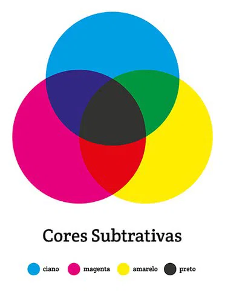
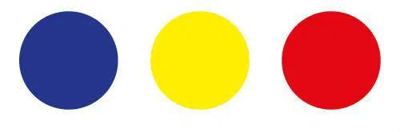
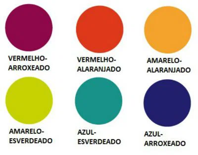

A tríade subtrativa utiliza como cores primárias: amarelo, magenta e ciano. As combinações de cores são:
|
| São chamadas “subtrativas”, pois a mistura das cores primárias resulta no preto, ou seja, na ausência de luz |
| A síntese subtrativa também pode ser chamada de sistema CMYK (do inglês cyan, magenta, yellow. A letra K representa o preto). O sistema CMYK é geralmente utilizado na indústria gráfica. |

As cores são tradicionalmente classificadas da seguinte forma:
São as chamadas cores puras:
|
São formadas pela união de duas cores primárias.
Também são três:
|
Surgem a partir da união de uma cor primária e uma secundária. Dessa forma, temos seis cores terciárias, são elas:
|
